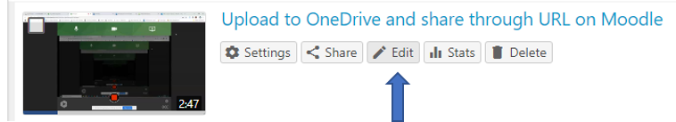
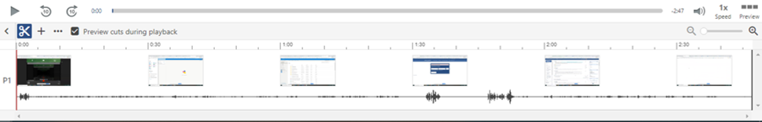

Once you've
recorded
and
uploaded
a video on Panopto, you have the ability to edit your video track and apply the changes to the video right on Panopto.
To do this:
-
Underneath your video, click the Edit button to bring up the video editor.

-
Once the video editor is opne, you will see the timeline at the bottom of the screen with a track for each
video stream. Typically, this will include the primary and secondary streams.

-
When you play your video, you'll see the red vertical bar move along the timeline. Use the scissors icon to trim or
cut the video.

-
Panopto will automatically save any changes you make to the video, as you can see in the top right corner.
However, it is essential that you hit the blue Apply button when you are finished editing in order for your changes
to take effect.

For more extensive video editing documentation in Panopto, please see
How to Edit a Video
and
How to Trim a Video in the Editor
on the
Panopto Support site.
To find more details about captioning, please look at
Captioning in Panopto
and
read more about automatic captioning for Panopto.